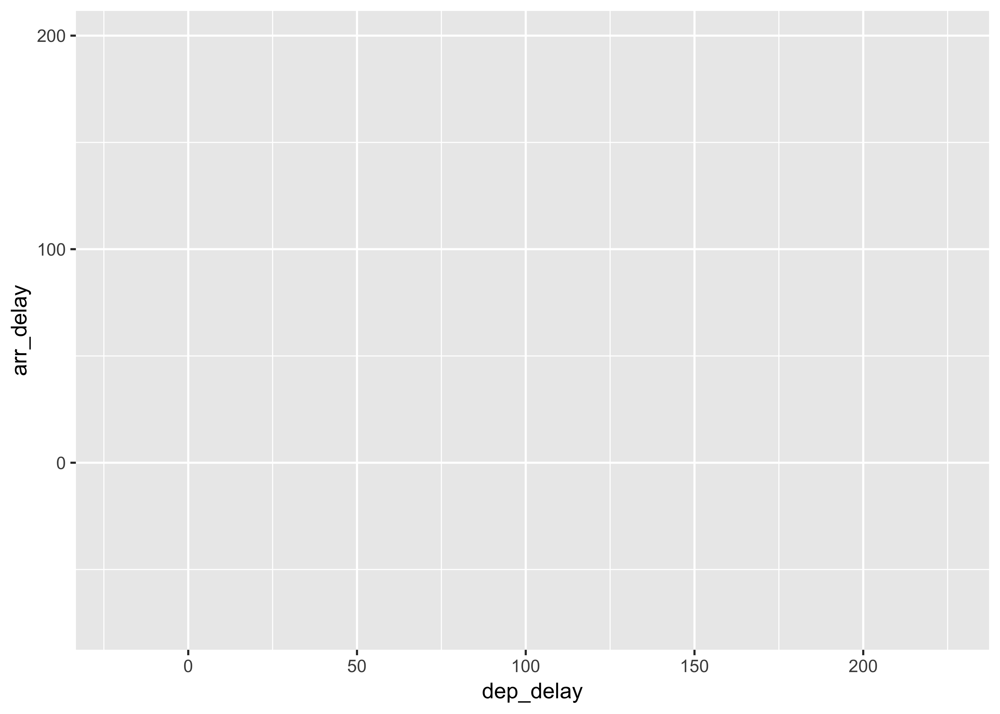
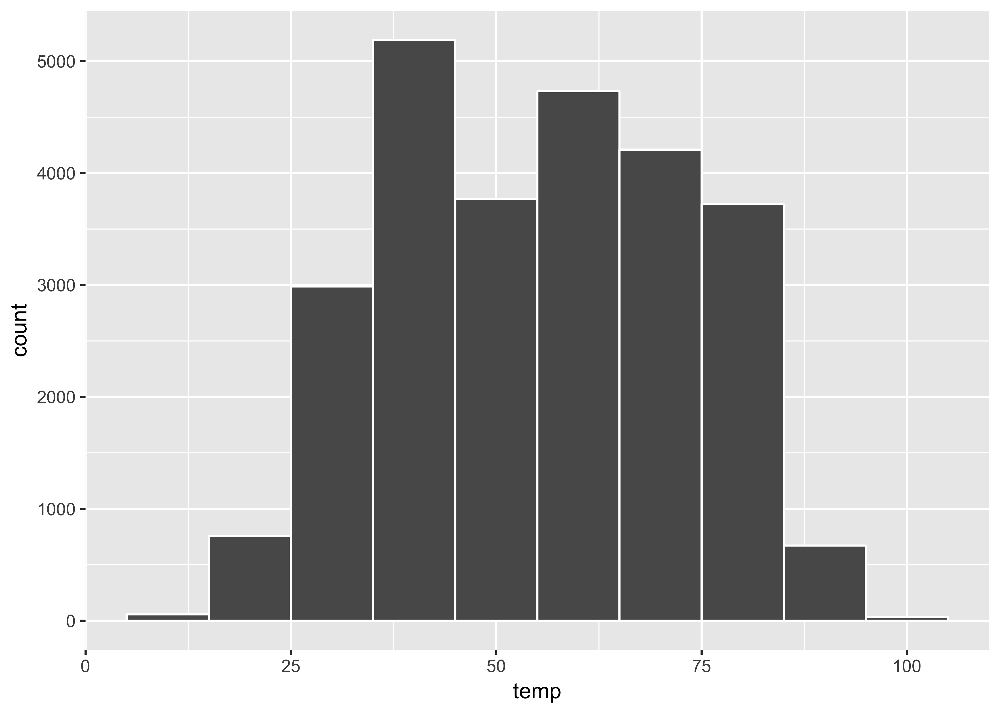

Class Meeting 1.3 (cm013)
Lab: Data Visualization
Alison Hill
Overview
A complete knitted html file is due on Sakai by beginning of class Thursday July 5th (2:30pm).
The goal is to explore a new-to-you dataset. In particular, to begin to establish a workflow for data frames or “tibbles”. You will use dplyr and ggplot2 to do some description and visualization.
# copy and paste to start
library(nycflights13)
library(ggplot2)
library(dplyr)
all_alaska_flights <- flights %>%
filter(carrier == "AS")
ggplot(data = all_alaska_flights, mapping = aes(x = dep_delay, y = arr_delay))
(LC3.2) What are some practical reasons why dep_delay and arr_delay have a positive relationship?
(LC3.3) What variables (not necessarily in the flights data frame) would you expect to have a negative correlation (i.e. a negative relationship) with dep_delay? Why? Remember that we are focusing on numerical variables here.
(LC3.4) Why do you believe there is a cluster of points near (0, 0)? What does (0, 0) correspond to in terms of the Alaskan flights?
(LC3.5) What are some other features of the plot that stand out to you?
(LC3.6) Create a new scatterplot using different variables in the all_alaska_flights data frame by modifying the example above.
# your code here(LC3.7) Why is setting the alpha argument value useful with scatterplots? What further information does it give you that a regular scatterplot cannot?
Switch datasets
# copy and paste
early_january_weather <- weather %>%
filter(origin == "EWR" & month == 1 & day <= 15)(LC3.9) Take a look at both the weather and early_january_weather data frames by running View(weather) and View(early_january_weather) in the console. In what respect do these data frames differ?
(LC3.10) View() the flights data frame again. Why does the time_hour variable uniquely identify the hour of the measurement whereas the hour variable does not?
(LC3.11) Why should linegraphs be avoided when there is not a clear ordering of the horizontal axis?
(LC3.12) Why are linegraphs frequently used when time is the explanatory variable?
(LC3.13) Plot a time series of a variable other than temp for Newark Airport in the first 15 days of January 2013.
# your code here(LC3.15) Would you classify the distribution of temperatures as symmetric or skewed? (referring to the plot below)
ggplot(data = weather, mapping = aes(x = temp)) +
geom_histogram(binwidth = 10, color = "white")